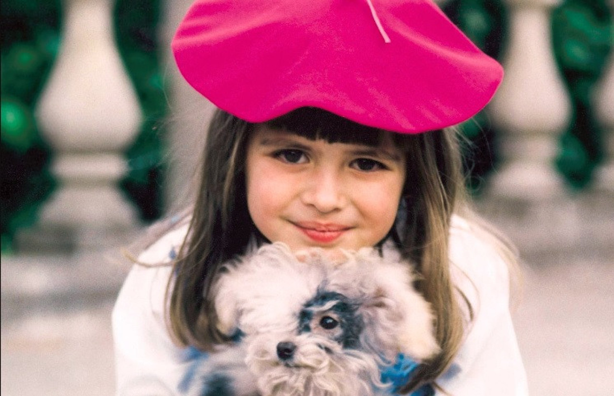
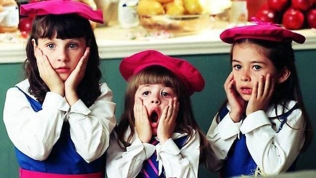
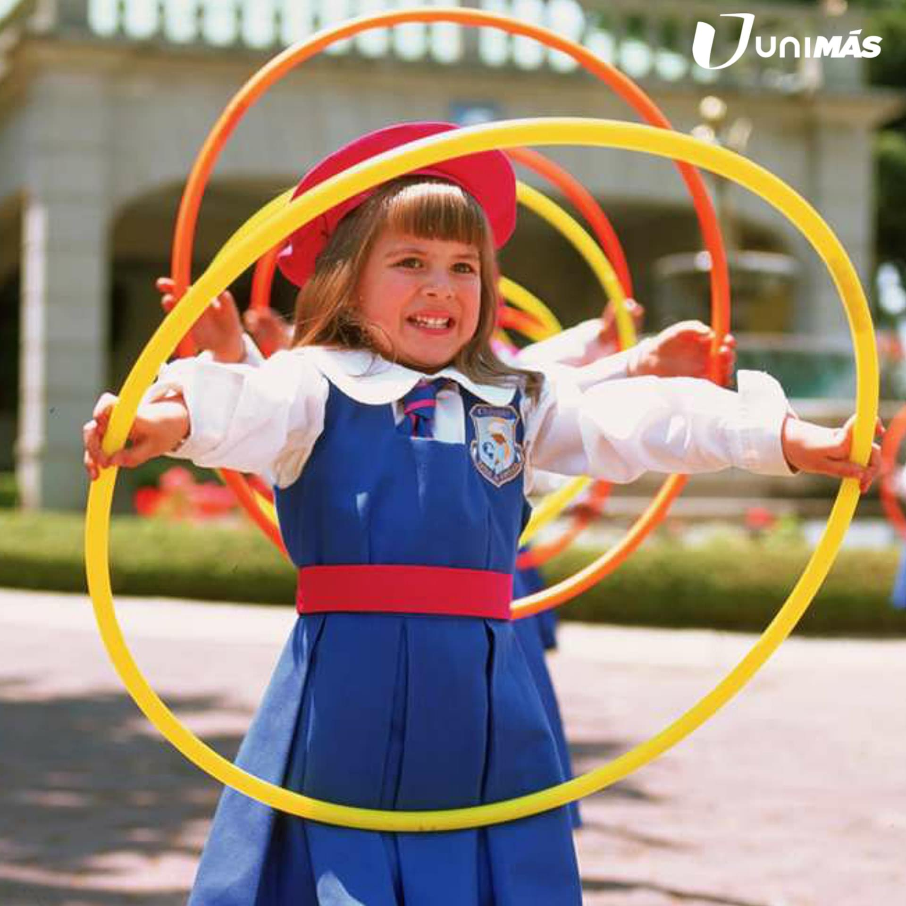
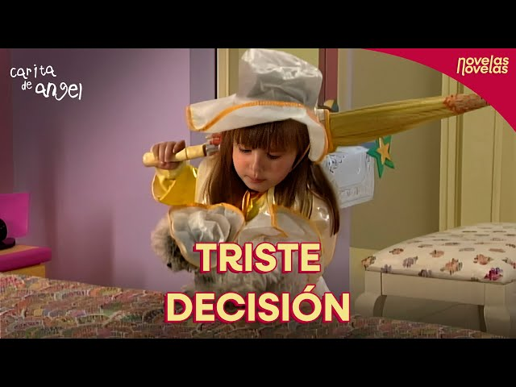

Mai ții minte fetița aia mică și ștrengară, cu ochi mari și luminoși, care purta mereu uniforma de la internatul "Reina de América"? Dacă ai crescut în anii 2000, e imposibil să nu-ți amintești de Dulce-María din "Carita de Ángel" (Îngerașul). Această telenovelă mexicană nu a fost doar un serial pentru copii, a fost o lecție de viață despre inocență, despre cum să găsești bucuria chiar și după o pierdere imensă, și despre puterea magică a imaginației. De la conversațiile ei secrete cu mama dispărută în "camera magică" din pod, până la încercările adorabile de a o "mărita" pe sora Cecilia cu tatăl ei deprimat, Dulce María ne-a arătat că un suflet mic poate muta munții.
Carita de Ángel rămâne un exemplu de serial care combină distracția cu învățătura. Prin aventurile sale simple, dar emoționante, ne amintește că inocența, curajul și bunătatea pot schimba lumea în bine. Este un serial ce merită vizionat, fie că ești copil sau adult, și care îți aduce aminte de frumusețea lucrurilor simple din viață.
Pe această pagină poți accesa episoadele, pentru a retrăi magia copilăriei și pentru a împărtăși bucuria serialului cu alții.
Redescoperă povestea care ne-a făcut pe toți să credem în îngeri...




"Prietenia adevărată aduce mereu bucurie și zâmbete."
"Curiozitatea te poate conduce către cele mai frumoase aventuri."
"Familia este cel mai prețios dar pe care îl avem."